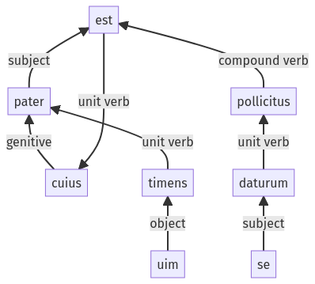

Hyginus, Fabulae, 33pr.1.31-33pr.1.38a
33pr.1.1-33pr.1.30a | 33pr.2.1-33pr.2.7a
Sentence 459
33pr.1.31-33pr.1.38a
cuius pater uim timens pollicitus est se daturum.
1 pater
2 uim timens
1 pollicitus est
2 se daturum
cuius pater uim timens pollicitus est se daturum.
Highlighting:
- connecting words
- unit verb
- subject
- object
Color code:
- independent clause (level 1, transitive verb)
- circumstantial participle (level 2, transitive verb)
- circumstantial participle (level 2, transitive verb)
